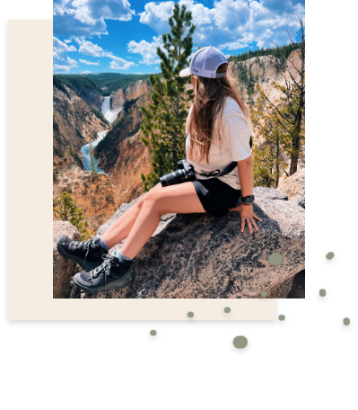

Hey Glad You're Here
Hi, I'm Andrea, a passionate Senior Graphic Design Major at West
Virginia University. My commitment to creativity and versatility drives my journey as a graphic
designer. I constantly seek to expand my skill set, embracing areas like photography,
advertising, and strategic social media to enhance my capabilities. Beyond the world of design,
my heart belongs to the great outdoors, literature, and philanthropy, which have collectively
sculpted me into a distinctive and multi-faceted artist.

Passion Projects
Philanthropic work has been something that has always interested me and has allowed me to
give back
to companies that have changed my life. The Cystic Fibrosis Foundation, The Make-A-Wish
Foundation,
and myself have worked closely with one throughout my entire life. At 9 weeks old I was
diagnosed
with Cystic Fibrosis and at 17 years old I was granted a Wish. Since my Wish I have spoken
for
Make-A-Wish at galas and events to raise money for more kids wishes to be granted. All while
working
in conjunction for the CF Foundation to raise money for research into a cure for Cystic
Fibrosis.
3GUYS Before the Game Podcast Product and Website Design January 2023-Present
Graphic Design and Photography Internship at West Virginia University Campus Rec August
2022-Present
Social Media Coordinator and Designer for West Virginia University MasBiology Department
November 2022-Present
Graphic Design Internship at Famous Supply. Fairlawn, OHGraphic Design Internship at Famous
Supply.
Fairlawn, OH May 2022-August 2022
Work Experience
E3 Camp Councelor and Deisgn Chair April 2023-July 2023
Extracurricular Activities
Chi Omega Sorority, West Virginia University Theta Chapter March 2021-Present
Chi Omega Sorority, Philanthropy Chair January 2022-January 2023
Make-A-Wish Speaker, Cleveland, OH August 2019-Present
Cystic Fibrosis Foundation Cleveland, OH August 2015-Present
Studio Skills
Darkroom Processing
Cursive Hand Lettering
Cricut Suite
Painting
Illustration